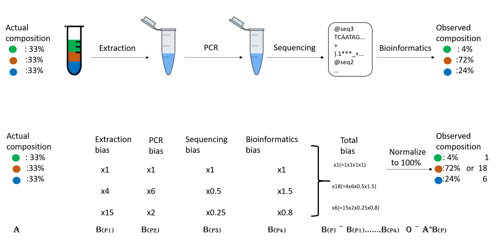
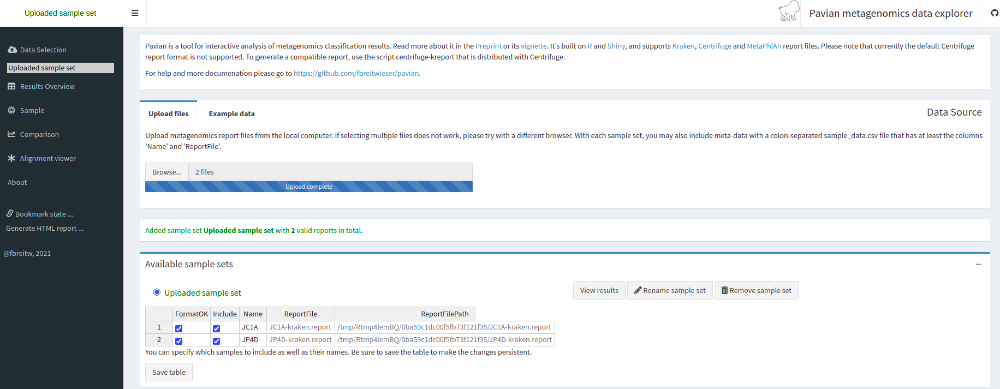
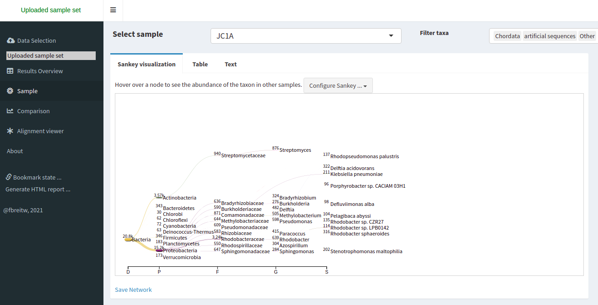
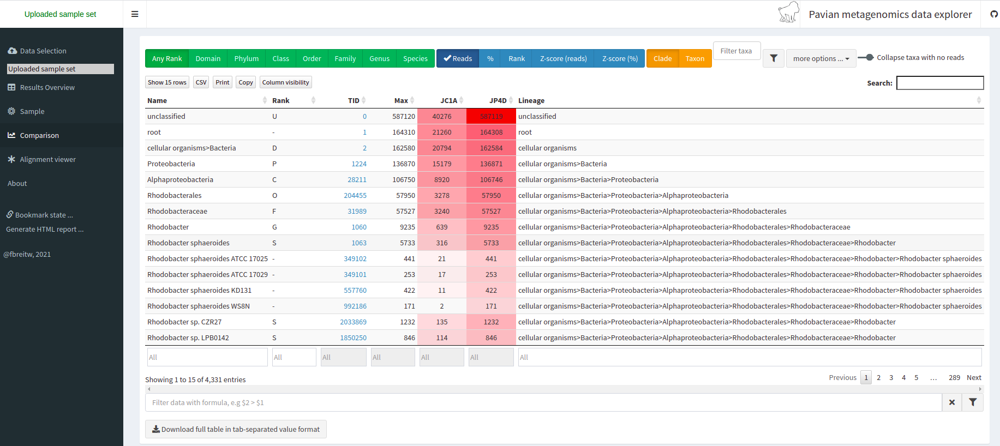

A taxonomic assignment is a process of assigning an Operational Taxonomic Unit (OTU, that is, groups of related individuals) to sequences that can be reads or contigs. Sequences are compared against a database constructed using complete genomes. When a sequence finds a good enough match in the database, it is assigned to the corresponding OTU. The comparison can be made in different ways.
There are many programs for doing taxonomic mapping, and almost all of them follow one of the following strategies:
Homology: Using BLAST or DIAMOND, these mappers search for the most likely hit for each sequence within a database of genomes (i.e., mapping). This strategy is slow.
Markers: They look for markers of a database made a priori in the sequences to be classified and assigned the taxonomy depending on the hits obtained.
K-mers: A genome database is broken into pieces of length k to be able to search for unique pieces by taxonomic group, from a lowest common ancestor (LCA), passing through phylum to species. Then, the algorithm breaks the query sequence (reads/contigs) into pieces of length k, looks for where these are placed within the tree and make the classification with the most probable position.
When you do the taxonomic assignment of metagenomes, a key result is the abundance of each taxon or OTU in your sample. The absolute abundance of a taxon is the number of sequences (reads or contigs, depending on what you did) assigned to it. Moreover, its relative abundance is the proportion of sequences assigned to it. It is essential to be aware of the many biases that can skew the abundances along the metagenomics workflow, shown in the figure, and that because of them, we may not be obtaining the actual abundance of the organisms in the sample.
 Figure 2. Abundance biases during a metagenomics protocol.Discussion: Taxonomic level of assignment
What do you think is harder to assign, a species (like E. coli) or a phylum (like Proteobacteria)?
Kraken 2 is the newest version of Kraken, a taxonomic classification system using exact k-mer matches to achieve high accuracy and fast classification speeds. Let's looks at the help menu for kraken2:
$ interactive
$ apptainer run /contrib/singularity/shared/bhurwitz/kraken2:2.1.3--pl5321hdcf5f25_0.sif kraken2 --help
Need to specify input filenames!
Usage: kraken2 [options] <filename(s)>
Options:
--db NAME Name for Kraken 2 DB
(default: none)
--threads NUM Number of threads (default: 1)
--quick Quick operation (use first hit or hits)
--unclassified-out FILENAME
Print unclassified sequences to filename
--classified-out FILENAME
Print classified sequences to filename
--output FILENAME Print output to filename (default: stdout); "-" will
suppress normal output
--confidence FLOAT Confidence score threshold (default: 0.0); must be
in [0, 1].
--minimum-base-quality NUM
Minimum base quality used in classification (def: 0,
only effective with FASTQ input).
--report FILENAME Print a report with aggregate counts/clade to file
--use-mpa-style With --report, format report output like Kraken 1's
kraken-mpa-report
--report-zero-counts With --report, report counts for ALL taxa, even if
counts are zero
--report-minimizer-data With --report, report minimizer, and distinct minimizer
count information in addition to normal Kraken report
--memory-mapping Avoids loading database into RAM
--paired The filenames provided have paired-end reads
--use-names Print scientific names instead of just taxids
--gzip-compressed Input files are compressed with gzip
--bzip2-compressed Input files are compressed with bzip2
--minimum-hit-groups NUM
Minimum number of hit groups (overlapping k-mers
sharing the same minimizer) needed to make a call
(default: 2)
--help Print this message
--version Print version information
If none of the *-compressed flags are specified, and the filename provided
is a regular file, automatic format detection is attempted.
In the help, we can see that in addition to our input files, we also need a database to compare them. The database you use will determine the result you get for your data. Imagine you are searching for a recently discovered lineage that is not part of the available databases. Would you find it?
There are several databases compatible to be used with kraken2 in the taxonomical assignment process.
We will be using the PlusPF Standard plus Refeq protozoa & fungi from 2023-06-05 which is located in /groups/bhurwitz/databases/kraken2/k2_pluspf_20230605 for our analyses.
Taxonomic assignments can either be done on the read-level before the assembly, or on the contigs after assembly.
We will run this step in our homework, but this compute time / load is too high for our in-class exercise. Instead, we will use a pre-computed file with the kraken output.
In this case, we can use FASTQ files as inputs, which would be:
JP4D_R1.trim.fastq.gz and JP4D_R2.trim.fastq.gz. And the outputs would be two files: the report JP4D.report and the kraken file JP4D.kraken.
To run kraken2, we will use a command like this in the homework:
*** No need to run this command, it is just provided as an example ***
$ apptainer run ${KRAKEN2} kraken2 --db ${DB_DIR} --paired \
--classified-out ${OUTDIR}/cseqs#.fq --output ${OUTDIR}/kraken_results.txt \
--report ${OUTDIR}/kraken_report.txt --use-names --threads 24 \
JP4D_R1.trim.fastq.gz JP4D_R2.trim.fastq.gz
The files from the pre-computed output are JP4D.kraken and JP4D.report.
Let us look at the precomputed outputs for kraken2 for our JP4D reads.
head /xdisk/bhurwitz/bh_class/YOUR_NETID/exercises/11_taxonomy/JP4D.kraken
U MISEQ-LAB244-W7:156:000000000-A80CV:1:1101:19691:2037 0 250|251 0:216 |:| 0:217
U MISEQ-LAB244-W7:156:000000000-A80CV:1:1101:14127:2052 0 250|238 0:216 |:| 0:204
U MISEQ-LAB244-W7:156:000000000-A80CV:1:1101:14766:2063 0 251|251 0:217 |:| 0:217
C MISEQ-LAB244-W7:156:000000000-A80CV:1:1101:15697:2078 2219696 250|120 0:28 350054:5 1224:2 0:1 2:5 0:77 2219696:5 0:93 |:| 379:4 0:82
U MISEQ-LAB244-W7:156:000000000-A80CV:1:1101:15529:2080 0 250|149 0:216 |:| 0:115
U MISEQ-LAB244-W7:156:000000000-A80CV:1:1101:14172:2086 0 251|250 0:217 |:| 0:216
U MISEQ-LAB244-W7:156:000000000-A80CV:1:1101:17552:2088 0 251|249 0:217 |:| 0:215
U MISEQ-LAB244-W7:156:000000000-A80CV:1:1101:14217:2104 0 251|227 0:217 |:| 0:193
C MISEQ-LAB244-W7:156:000000000-A80CV:1:1101:15110:2108 2109625 136|169 0:51 31989:5 2109625:7 0:39 |:| 0:5 74033:2 31989:5 1077935:1 31989:7 0:7 60890:2 0:105 2109625:1
C MISEQ-LAB244-W7:156:000000000-A80CV:1:1101:19558:2111 119045 251|133 0:18 1224:9 2:5 119045:4 0:181 |:| 0:99
This information may need to be clarified. Let us take out our cheatsheet to understand some of its components:
|------------------------------+------------------------------------------------------------------------------|
| Column example | Description |
|------------------------------+------------------------------------------------------------------------------|
| C | Classified or unclassified |
|------------------------------+------------------------------------------------------------------------------|
| MISEQ-LAB244-W7:156:000000000-A80CV:1:1101:15697:2078 |FASTA header of the sequence |
|------------------------------+------------------------------------------------------------------------------|
| 2219696 | Tax ID |
|------------------------------+------------------------------------------------------------------------------|
| 250:120 |Read length |
|------------------------------+------------------------------------------------------------------------------|
| 0:28 350054:5 1224:2 0:1 2:5 0:77 2219696:5 0:93 379:4 0:82|kmers hit to a taxonomic ID e.g., tax ID 350054 has five hits, tax ID 1224 has two hits, etc. |
|-------------------+-----------------------------------------------------------------------------------------|
The Kraken file is more readable. So let us look at the report file:
head /xdisk/bhurwitz/bh_class/YOUR_NETID/exercises/11_taxonomy/JP4D.report
78.13 587119 587119 U 0 unclassified
21.87 164308 1166 R 1 root
21.64 162584 0 R1 131567 cellular organisms
21.64 162584 3225 D 2 Bacteria
18.21 136871 3411 P 1224 Proteobacteria
14.21 106746 3663 C 28211 Alphaproteobacteria
7.71 57950 21 O 204455 Rhodobacterales
7.66 57527 6551 F 31989 Rhodobacteraceae
1.23 9235 420 G 1060 Rhodobacter
0.76 5733 4446 S 1063 Rhodobacter sphaeroides
|------------------------------+------------------------------------------------------------------------------|
| Column example | Description |
|------------------------------+------------------------------------------------------------------------------|
| 78.13 | Percentage of reads covered by the clade rooted at this taxon |
|------------------------------+------------------------------------------------------------------------------|
| 587119 | Number of reads covered by the clade rooted at this taxon
|------------------------------+------------------------------------------------------------------------------|
| 587119 | Number of reads assigned directly to this taxon |
|------------------------------+------------------------------------------------------------------------------|
| U | A rank code, indicating (U)nclassified, (D)omain, (K)ingdom, (P)hylum, (C)lass, (O)rder, (F)amily, (G)enus, or (S)pecies. All other ranks are simply '-'. |
|------------------------------+------------------------------------------------------------------------------|
| 0 |NCBI taxonomy ID |
|-------------------+-----------------------------------------------------------------------------------------|
| unclassified | Indented scientific name |
|-------------------+-----------------------------------------------------------------------------------------|
We now have the taxonomic identity of the reads of the whole metagenome, but we need to know to which taxon our MAGs correspond to. For this, we have to make the taxonomic assignment with the contigs instead of the reads because we do not have the reads corresponding to a MAG separated from the reads of the entire sample.
For this, the kraken2 is a little bit different; here, we can look at the command for the JP4D.001.fasta MAG:
*** No need to run this command it is just provided as an example ***
$ apptainer run ${KRAKEN2} kraken2 --db ${DB_DIR} \
--classified-out ${OUTDIR}/c_contigs.fa --output ${OUTDIR}/kraken_results.txt \
--report ${OUTDIR}/kraken_report.txt --use-names --threads 24 \
JP4D.001.fasta
The results of this are pre-computed in the /xdisk/bhurwitz/bh_class/YOUR_NETID/exercises/11_taxonomy/mags_taxonomy/ directory
$ cd /xdisk/bhurwitz/bh_class/YOUR_NETID/exercises/11_taxonomy/mags_taxonomy/
$ ls
JP4D.001.kraken
JP4D.001.report
$ more JP4D.001.report
50.96 955 955 U 0 unclassified
49.04 919 1 R 1 root
48.83 915 0 R1 131567 cellular organisms
48.83 915 16 D 2 Bacteria
44.40 832 52 P 1224 Proteobacteria
19.37 363 16 C 28216 Betaproteobacteria
16.22 304 17 O 80840 Burkholderiales
5.66 106 12 F 506 Alcaligenaceae
2.72 51 3 G 517 Bordetella
1.12 21 21 S 2163011 Bordetella sp. HZ20
.
.
.
Looking at the report, we can see that half of the contigs are unclassified and that a tiny proportion of contigs have been assigned an OTU. This result is weird because we expected only one genome in the bin.
To exemplify how a report of a complete and uncontaminated MAG should look like, let's look at the report of this MAG from another study:
100.00 108 0 R 1 root
100.00 108 0 R1 131567 cellular organisms
100.00 108 0 D 2 Bacteria
100.00 108 0 P 1224 Proteobacteria
100.00 108 0 C 28211 Alphaproteobacteria
100.00 108 0 O 356 Rhizobiales
100.00 108 0 F 41294 Bradyrhizobiaceae
100.00 108 0 G 374 Bradyrhizobium
100.00 108 108 S 2057741 Bradyrhizobium sp. SK17
After we have the taxonomy assignment, we can visualize our results using Krona:
Krona is a hierarchical data visualization software. Krona allows data to be explored with zooming and multi-layered pie charts and supports several bioinformatics tools and raw data formats. To use Krona in our results, let's first go into our taxonomy directory, which contains the pre-calculated Kraken outputs.
With Krona, we will explore the taxonomy of the JP4D.001 MAG.
$ cd /xdisk/bhurwitz/bh_class/YOUR_NETID/exercises/11_taxonomy/mags_taxonomy
Krona is called with the ktImportTaxonomy command that needs an input and an output file.
In our case, we will create the input file with columns three and four from JP4D.001.kraken file.
$ cut -f2,3 JP4D.001.kraken > JP4D.001.krona.input
Now we call Krona in our JP4D.001.krona.input file and save results in JP4D.001.krona.out.html.
## remember to run this after you are in interactive mode
$ interactive
$ /contrib/singularity/shared/bhurwitz/krona:2.8.1--pl5321hdfd78af_1.sif ktImportTaxonomy -q 2 JP4D.001.krona.input -tax /groups/bhurwitz/databases/krona/KronaTools-2.8.1/taxonomy -o KronaReport.html
[ WARNING ] Score column already in use; not reading scores.
Loading taxonomy...
Importing JP4D.001.kraken...
[ WARNING ] The following taxonomy IDs were not found in the local database and were set to root (if they were recently added to NCBI, use updateTaxonomy.sh to update the
local database): 2259134 80870 1637841 2052837 1804984 2109625
Writing KronaReport.html...
No need to worry about the warnings. Now, you can open the file in your home directory from a Jupyter server on the HPC
$ cp KronaReport.html ~
You will see a page like this:
Exercise 1: Exploring Krona visualization
Try double-clicking on the pie chart segment representing Bacteria and see what happens. What percentage of bacteria is represented by the genus Paracoccus?
Hint: A search box is in the window's top left corner.
Pavian is another visualization tool that allows comparison between multiple samples. Pavian should be locally installed and needs R and Shiny, but we can try the Pavian demo WebSite to visualize our results.
First, we need to download the files needed as inputs in Pavian; this time, we will visualize the assignment of the reads of both samples:
JC1A.report and JP4D.report. These files correspond to our Kraken reports.
First let's copy thes files to your home directory and download from the Jupyter server on the HPC to your local computers.
$ cp /xdisk/bhurwitz/bh_class/bonnie/exercises/11_taxonomy/*report ~
Now go to the Pavian demo WebSite, click on Browse, and choose your reports. You need to select both reports at the same time.
We click on the Results Overview tab.

We click on the Sample tab.
We can look at the abundance of a specific taxon by clicking on it.

We can look at a comparison of both our samples in the Comparison tab.
Discussion: Unclassified reads
As you can see, a percentage of our data could not be assigned to belong to a specific OTU.
Which factors can affect the taxonomic assignation so that a read is unclassified?
Unclassified reads can be the result of different factors that can go from sequencing errors to problems with the algorithm being used
to generate the result. The widely used Next-generation sequencing (NGS) platforms,
showed average error rate of 0.24±0.06% per base.
Besides the sequencing error, we need to consider the status of the database being used to perform the taxonomic assignation.
All the characterized genomes obtained by different research groups are scattered in different repositories, pages, and banks
in the cloud. Some are still unpublished. Incomplete databases can affect the performance of the taxonomic assignation. Imagine that
the dominant OTU in your sample belongs to a lineage that has never been characterized and does not have a public genome available to
be used as a template for the database. This possibility makes the assignation an impossible task and can promote the generation of false positives
because the algorithm will assign a different identity to all those reads.